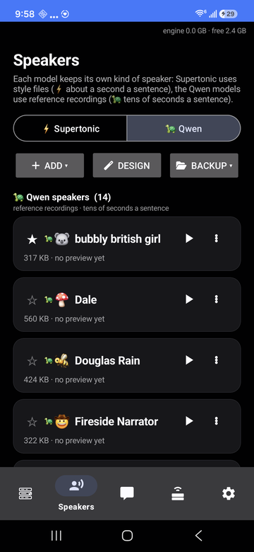
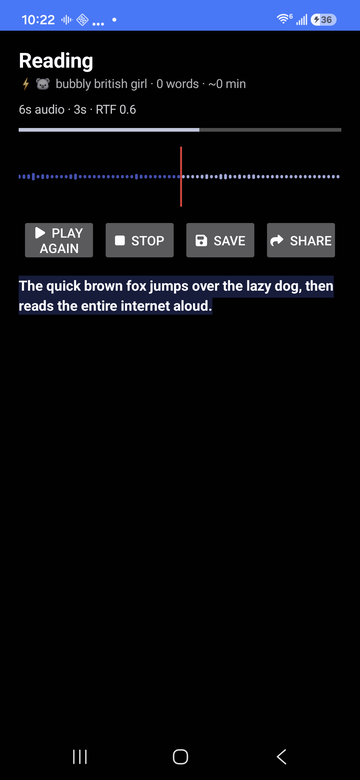
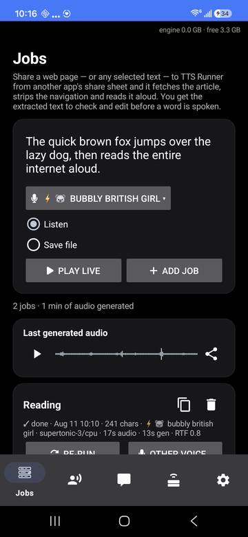
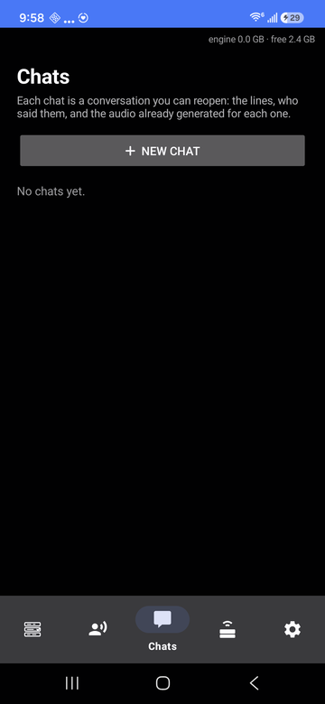
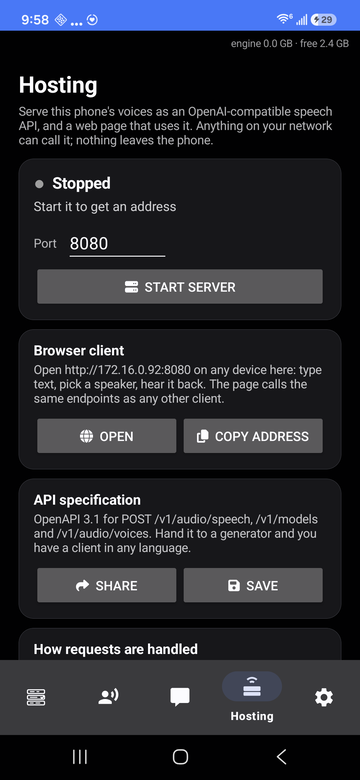
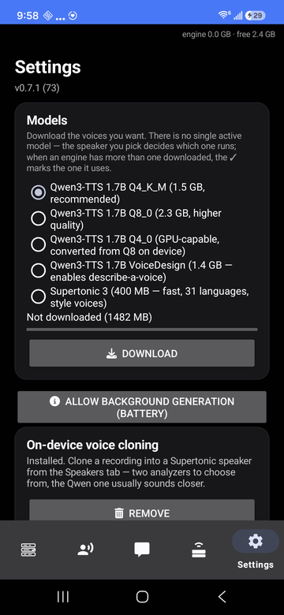

TTS Runner — on-device Qwen3-TTS and Supertonic 3
Two engines ship side by side. Qwen3-TTS (1.7B, llama.cpp) clones a voice from a 10–20 second reference recording. Supertonic 3 (99M, ONNX Runtime) runs below real time — 5.7 seconds of audio in 2.7 seconds on a Galaxy S24 FE — across 31 languages. The speaker you pick decides the engine; there is no hidden global setting and the app never switches backend behind your back.

a tab per engine

waveform as it reads

history and stats

a scene as a timeline

local speech API

models and backends
Taken on a Galaxy S24 FE running Android 16. These are the real app, not mock-ups — and they are served from this domain, like everything else on this site.
- Read anything you share. Send it text or an article URL from any app. Links are run through Readability — the Firefox Reader View algorithm — so nav bars, cookie banners and related-article rails are dropped and only the article is spoken. You see the extracted text in an editor before a word is read.
- Clone a voice. Record one on the phone, trim it on a waveform, or design one from a written description. A cloned voice can then be refined on the phone to sound closer — a gradient-free search that takes a few minutes.
- Chats. Conversations you keep: type a line, hear it immediately, switch speaker mid-scene, drag lines into a different order, export the whole thing as one track.
- Jobs. Compose and render to
Music/TTS Runner/*.m4awith the screen off, with per-job stats and re-runs in a different voice. - Local hosting. Optionally serve your phone's voices as an
OpenAI-compatible
POST /v1/audio/speechendpoint, with a browser client on the same port. This is off until you turn it on, and it serves your network, not ours. - Survives being killed. Every generated chunk is cached, so a job the OS kills mid-run continues from where it stopped rather than starting over.
This is the part most text-to-speech apps get wrong, because the easy way to build one is to send your text to somebody's API. We didn't.
- ✓Your text is processed on the phone. Generation runs locally in a native engine. Nothing is sent anywhere for synthesis.
- ✓Your voice recordings stay on the phone. Cloning and refinement run on-device. No reference audio is uploaded.
- ×No analytics SDK, no crash reporter, no ad ID. There is no account and no device identifier, so there is no profile of you anywhere.
- ×No background connections. The app touches the network in exactly three situations, all of them started by you: downloading a model you chose, fetching an article link you shared, and serving the local API if you switched it on.
Every permission is listed here with the feature that needs it. If a reason ever looks thin to you, deny it — the feature stops and the rest of the app keeps working.
| Microphone | Only to record a reference clip when you tap record for voice cloning. Not used at any other time, and never in the background. |
|---|---|
| Internet | Downloading the model you picked, fetching an article URL you shared, and the local speech API if you enable it. Nothing else. |
| Notifications | The progress notification for a running generation job, which Android requires for a foreground service. |
| Storage / folder access | Saving rendered audio where you asked for it, and the optional backup folder that mirrors your speakers so a reinstall becomes a restore. Scoped to the folder you choose. |
| Not requested | Contacts. Location. Call log. SMS. Camera. Calendar. Nearby devices. Anything with “precise” in the name. |
| Device / engine | Result |
|---|---|
| Galaxy S24 FE — Supertonic 3, CPU | 5.7 s of audio in 2.7 s (RTF 0.47) |
| Galaxy Z Fold5 — Supertonic 3, CPU | 33 s of audio in 16 s (RTF 0.48) |
| Galaxy S24 FE — Qwen3-TTS 1.7B, Vulkan | 3.4 s of audio in ~21 s |
| Galaxy Z Fold5 — Qwen3-TTS 1.7B, CPU | 3.4 s of audio in ~23 s |
Backends are chosen per engine and per phone — CPU, OpenCL or Vulkan for Qwen; CPU, NNAPI or XNNPACK for Supertonic. The app stars whichever it measured fastest on your hardware and tells you why it picked it.
| Install | Download the APK from the releases page and install it. There is no store listing, no sign-in and no licence key. |
|---|---|
| First run | Settings → download a model. Supertonic 3 is about 400 MB and is the fast one. Then Speakers → Clone, Design, or restore from a backup folder. |
| Use | From any app: share text or a link → Read aloud (TTS Runner). Or paste into the Jobs tab and press Listen. |
| Build it yourself | The build is fully containerised — the host needs only podman or docker, no Android SDK, NDK, JDK or Gradle. |